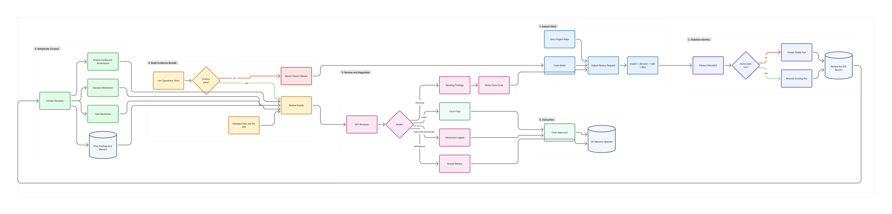

Pattern Pilot: Context-Aware AI Code Quality Workflow
A practical knowledge-base and LinkedIn-ready narrative for separating AI code writing from independent AI quality review.
Core idea: AI-assisted coding becomes more reliable when the code-writing agent and the code-reviewing agent have separate responsibilities, stable task identity, project governance, and shared decision/task context.
1. Problem Statement
The initial workflow used AI to write code and then submit that code to a separate review system. The idea was strong, but the early implementation exposed several practical problems.
- Review retries were often treated as new runs because task labels changed between attempts.
- The reviewer sometimes received changed files without enough decision or task context.
- Prior findings were not always carried into the next review round.
- Some review loops became noisy because medium-value findings could keep resurfacing.
- Operational interruptions, such as the Mac sleeping, could look like review failure even when the code workflow was healthy.
The key discovery was that the main issue was not simply prompt quality. The bigger issue was workflow continuity and context.
2. What Changed
Pattern Pilot was improved from a mostly request-based review service into a context-aware QC control plane.
Before
- Mutable task labels drove review identity.
- Round 2 or round 3 could become a separate run.
- Reviewer often restarted from scratch.
- Context was mostly changed files plus diff.
- Pass/fail was interpreted too literally.
|
After
- Stable task_id and decision_id drive review continuity.
- Resubmits stay within the same active run.
- Prior findings are loaded and verified.
- Decision/task markdown is resolved from the filesystem.
- Success means task reaches approval through QC.
|
3. Context-Aware QC Workflow
The workflow now follows a stable path from code submission through independent review and eventual approval.
Primary Visual: Pattern Pilot Context-Aware QC Workflow Infographic
The following visual is based on the FigJam workflow exported as a PDF and included here as a document asset.

Diagram 1: End-to-End Review Loop
| Code Writer |
to |
Submit Review Request |
to |
Resolve Context |
to |
Build Review Bundle |
| Fix Code |
from |
Blocking Findings |
from |
Independent GPT Review |
from |
Deterministic Checks |
| Resubmit |
loop |
Prior Findings Loaded |
until |
Pass |
or |
Escalate |
Diagram 2: Context Resolution Model
| project_name |
decision_id |
task_id |
files_changed |
| Pattern Pilot resolves context from stable IDs |
| Project Config |
Decision Markdown |
Task Markdown |
Prior Findings |
| merged into one review bundle |
| Reviewer sees project -> decision -> task -> diff |
Diagram 3: Review State Lifecycle
| running |
to |
blocked |
to |
resubmitted |
to |
passed |
| running |
to |
passed_with_advisories |
or |
requires_human_review |
or |
interrupted |
4. Metrics and Observations
The strongest metric is not first-pass success. The stronger metric is task-level convergence: did the task eventually reach approval, and how many review rounds did it take?
| Observation Area |
Earlier Pattern |
Improved Pattern |
| Run continuity |
Retries often became separate runs when task labels changed. |
Stable task_id and decision_id keep resubmits in the same active run. |
| Review context |
Reviewer mostly saw changed files and diff. |
Reviewer sees project, decision, task, governance, prior findings, and diff. |
| Recent task convergence |
Many abandoned or fragmented runs made progress hard to measure. |
Recent successful tasks generally completed in 1 to 3 review rounds. |
| Finding quality |
Some review cycles felt repetitive or low-value. |
Recent findings were mostly correctness, contract, readiness, and runtime-safety issues. |
| Operational interruptions |
Mac sleep could make runs appear hung or failed. |
These are now understood as infrastructure interruptions, not code-quality failures. |
Recent observed sample after the workflow update: 16 runs reviewed, 12 passed, and successful tasks generally completed in 1 to 3 rounds. Failed or cancelled runs were treated as operational continuity events when the task later reached approval.
5. Important Reframing
A blocked review is not failure. A blocked review means the independent QC system found a real issue before the code was accepted.
In this model, the meaningful success metric is not zero findings. The meaningful success metric is whether the task reaches approval through a controlled, auditable review loop.
- Round 1 can find broad correctness or contract issues.
- Round 2 can verify fixes and catch narrower edge cases.
- Round 3 can confirm clean pass.
- Operational failures are separated from code-quality outcomes.
6. Best Practices Learned
- Separate writing from reviewing. The code writer and reviewer should have different roles.
- Use stable identity. Track task_id and decision_id instead of mutable task labels.
- Review against intent. The reviewer should know the task objective and acceptance criteria.
- Resolve context automatically. Use decision and task markdown files as context sources.
- Run deterministic checks first. Lint, typecheck, and tests should run before LLM review.
- Preserve prior findings. Resubmits should verify previous findings before searching for new ones.
- Measure convergence. Track rounds-to-pass, not just first-pass success.
- Classify operational interruptions separately. Host sleep and cancelled runs are not code-quality failures.
- Use governance as the baseline. AI review should enforce project-specific standards, not generic preferences.
7. LinkedIn Narrative
I have been experimenting with a practical pattern for AI-assisted software delivery:
Separate the AI that writes code from the AI that reviews code.
In my workflow, a coding agent implements changes, then submits them to a separate QC control plane called Pattern Pilot. Pattern Pilot resolves project context, decision context, task context, governance rules, prior findings, and deterministic check results before asking a separate GPT reviewer to inspect the change.
The loop looks like this:
code change -> deterministic checks -> context-aware AI review -> findings -> fix and resubmit -> pass, advisory, or escalation
The biggest lesson so far:
AI code review needs stable context.
Not just changed files, but project context, decision context, task context, governance rules, prior findings, and acceptance criteria.
Before this, retries often looked like new review runs. The reviewer lost context, and the system repeated itself.
After moving to stable task_id, decision_id, and filesystem-based context resolution, review loops became much cleaner. Recent backend tasks generally reached approval in 1 to 3 review rounds, with findings focused on real correctness and contract issues.
A review finding is not a failure. It is the QC system doing its job.
The real metric is:
- did the task eventually pass?
- how many review rounds were needed?
- did findings narrow over time?
- was the review actionable?
My takeaway:
The future of AI-assisted coding is not just faster code generation.
It is auditable engineering workflows where AI-written code is reviewed against project standards, decisions, and task intent before it is accepted.
8. Suggested LinkedIn Carousel Structure
| Slide |
Title |
Message |
| 1 |
AI writes code. Who reviews it? |
Introduce the separation-of-duties problem. |
| 2 |
The problem with stateless review |
Changing task labels and missing context caused fragmented review loops. |
| 3 |
The new workflow |
Code writer -> Pattern Pilot -> independent reviewer -> fix/resubmit -> pass. |
| 4 |
Context matters |
Project, decision, task, governance, prior findings, and changed files. |
| 5 |
Blocked is not failed |
A blocking finding means QC caught something before acceptance. |
| 6 |
Results |
Recent backend tasks generally converged within 1 to 3 review rounds. |
| 7 |
Best practices |
Separate roles, stable IDs, deterministic checks, context resolution, prior-finding memory. |
| 8 |
The takeaway |
The future is not just better prompts. It is better engineering workflows. |
9. Positioning
This should be positioned as a practical engineering workflow, not as a claim that the idea is entirely new. The novelty is in applying known engineering controls to AI-assisted code delivery:
- separation of duties
- context-aware review
- governance-backed quality standards
- persistent review memory
- task-level convergence metrics
Recommended title: From AI Code Generation to AI Quality Control: A Context-Aware Review Loop
Prepared for Pattern Pilot knowledge sharing and LinkedIn publication. Metrics are based on observed Pattern Pilot backend review history during the context-aware workflow validation period.